Quay lại danh sách dự án
CASE STUDY · EPICURE · 09/2023–05/2026
B2B Event Marketing & Trade Show Activation
Industry Exhibition · Trade Show · Brand Activation
Lập kế hoạch và điều phối các điểm chạm trải nghiệm trực tiếp cho EPICURE và Lavazza, kết nối hoạt động trưng bày, product demonstration, sampling, tư vấn và thu thập lead trong một hành trình B2B thống nhất.
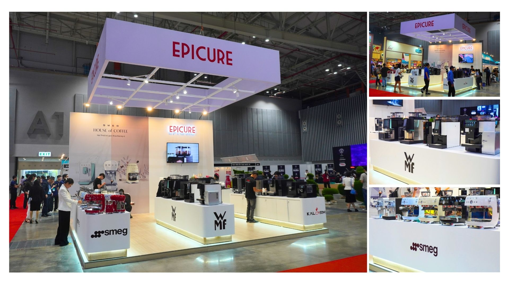
01 · PROJECT IMPACT
Kết quả triển khai
On Schedule
Các hạng mục phụ trách được hoàn thành theo timeline đã thống nhất.
Within Budget
Hoạt động được triển khai trong phạm vi ngân sách được phê duyệt.
Booth visitors là số ước tính; demo/sampling được đếm theo số người tham gia; lead chỉ tính các liên hệ đã được phân loại là qualified.
02 · CONTEXT & CHALLENGE
Biến trải nghiệm trực tiếp thành cơ hội B2B
Khách hàng B2B cần trực tiếp trải nghiệm thiết bị, đánh giá chất lượng đồ uống và trao đổi về giải pháp vận hành trước khi ra quyết định. Trade show vì vậy là điểm chạm giúp tiếp cận nhiều decision-makers trong cùng một thời điểm.
- Nhiều nhóm khách hàng có nhu cầu và tiêu chí lựa chọn khác nhau.
- Sản phẩm giá trị cao có chu kỳ ra quyết định dài.
- Gian hàng phải cân bằng brand experience và commercial objective.
- Marketing, Sales, kỹ thuật, kho vận, nhà thầu và ban tổ chức cần phối hợp chặt chẽ.
03 · OBJECTIVES
Năm mục tiêu trong cùng một trải nghiệm
Brand
Tăng nhận biết và củng cố hình ảnh doanh nghiệp chuyên nghiệp trong ngành.
Solution Showcase
Giới thiệu danh mục, giải pháp và trải nghiệm vận hành thực tế.
Lead Generation
Thu hút, thu thập và phân loại khách hàng B2B tiềm năng.
Commercial
Tạo yêu cầu tư vấn, báo giá và cơ hội bán hàng sau sự kiện.
Relationship
Kết nối với khách hàng, đối tác, hiệp hội và cộng đồng trong ngành.
04 · STRATEGIC APPROACH
Từ audience fit đến sales handoff
Event–Audience Fit
Lựa chọn thông điệp, danh mục sản phẩm và hình thức trải nghiệm theo chủ đề sự kiện và nhóm khách hàng chính.
Solution-led Showcase
Tổ chức gian hàng theo giải pháp hoàn chỉnh: thiết bị, nguyên liệu, phụ kiện, lắp đặt, bảo trì và tư vấn vận hành.
Experience to Commerce
Kết hợp demo, sampling và tư vấn với ưu đãi chọn lọc, bundle, quà tặng hoặc booking deposit khi phù hợp.
Lead Management
Chuẩn hóa thu thập, làm sạch, phân loại, bàn giao và theo dõi tình trạng follow-up sau sự kiện.
AttractEngageEducateQualifyCaptureHandoff & Follow-up
05 · MY ROLE
Phạm vi phụ trách
- Xác định mục tiêu, KPIs, target audience và sản phẩm trọng tâm.
- Xây dựng kế hoạch, timeline, ngân sách và phân bổ nguồn lực.
- Phát triển booth concept, visitor journey, trưng bày và activation flow.
- Phối hợp Sales, kỹ thuật, kho vận, nhà thầu và ban tổ chức.
- Xây dựng creative brief; kiểm soát POSM, sales materials, sampling và demo assets.
- Điều phối product demonstration, sampling, tương tác và tư vấn tại gian hàng.
- Thiết kế phương thức thu thập lead, chuẩn hóa dữ liệu và phân loại khách hàng.
- Tổng hợp lead, bàn giao cho Sales/Customer Care, theo dõi follow-up, chi phí và KPIs.
06 · OPERATING FRAMEWORK
Pre · During · Post
Pre-event: mục tiêu, audience, booth concept, ngân sách, timeline, sản phẩm và training.
During event: vận hành gian hàng, demo, sampling, lead capture, media và xử lý sự cố.
Post-event: làm sạch dữ liệu, phân loại lead, bàn giao follow-up, tổng hợp chi phí và review.
07 · SELECTED EXECUTION
Trải nghiệm được xây từ nhiều điểm chạm
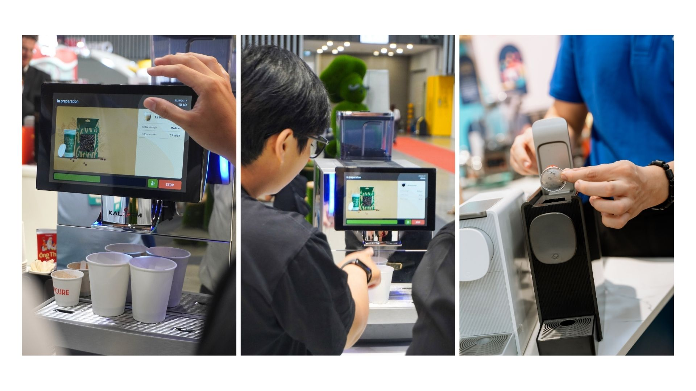
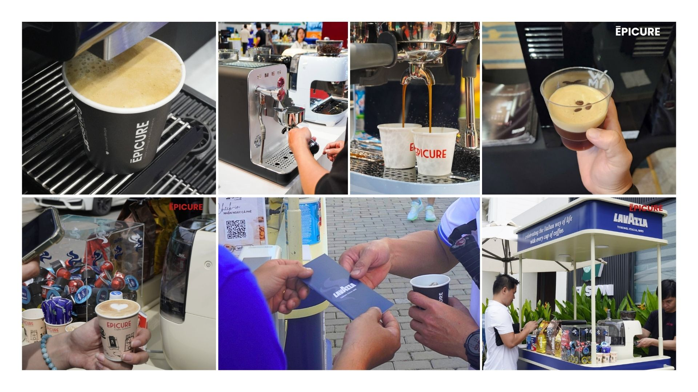
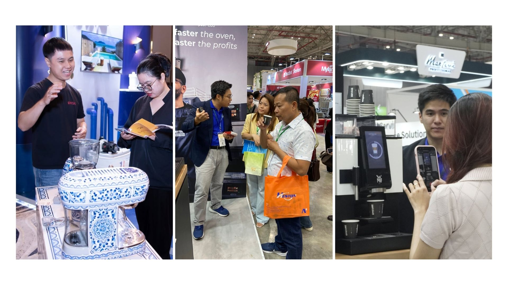
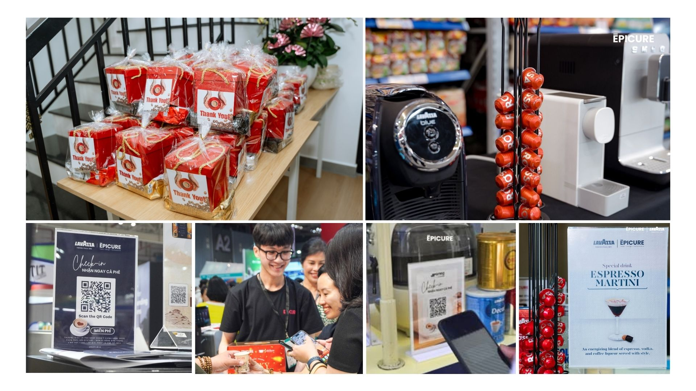
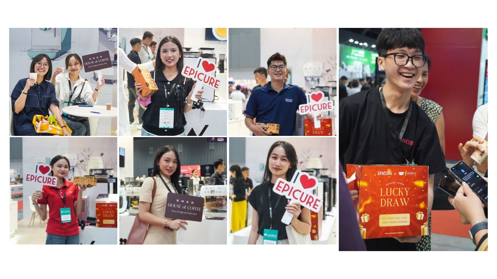
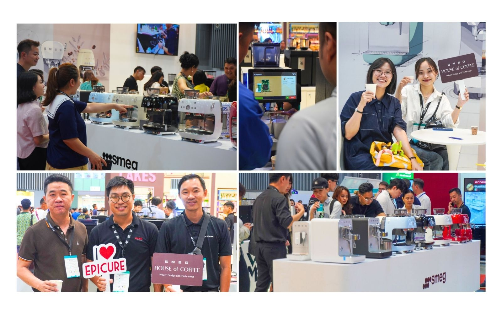
08 · EVENT PORTFOLIO
Bảy sự kiện đại diện
Hình ảnh chọn lọc trong tổng số hơn 15 hoạt động đã triển khai.
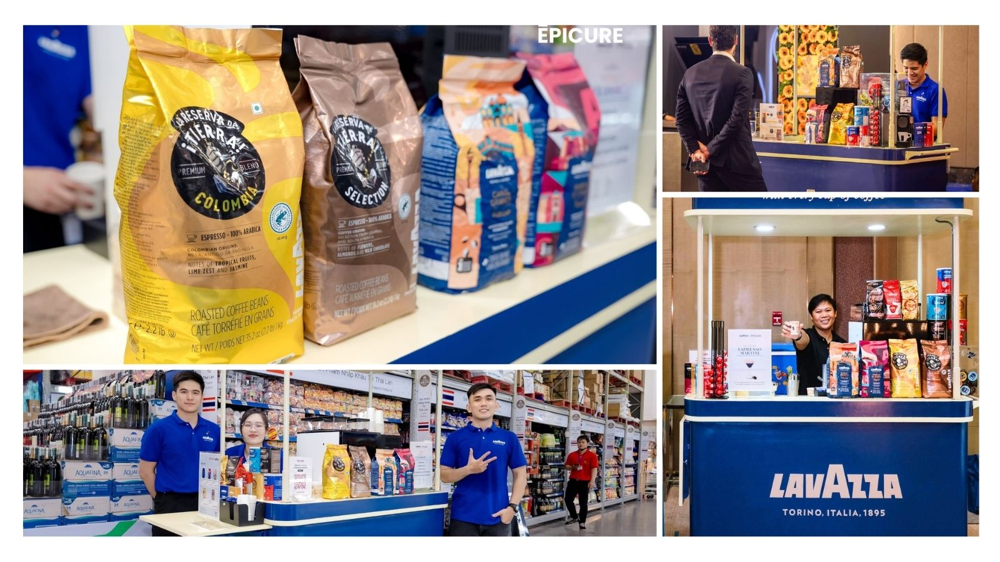
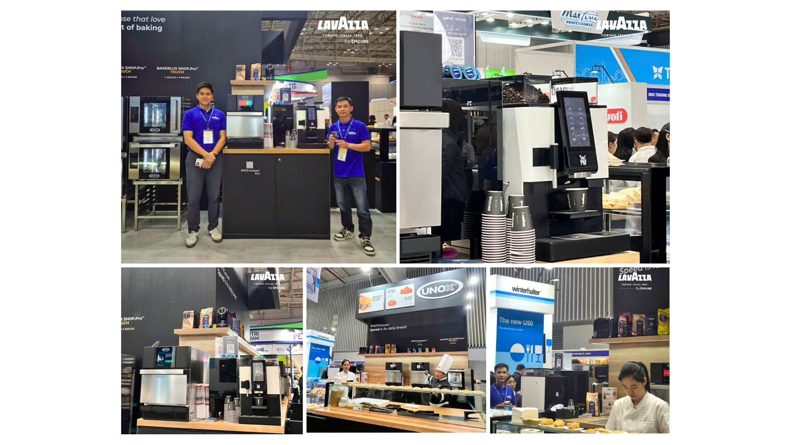
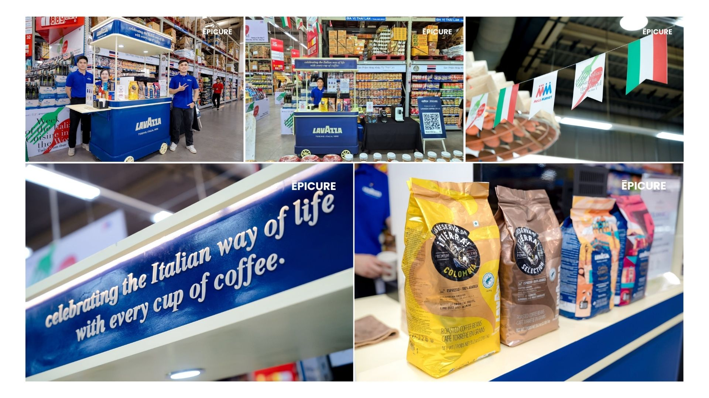
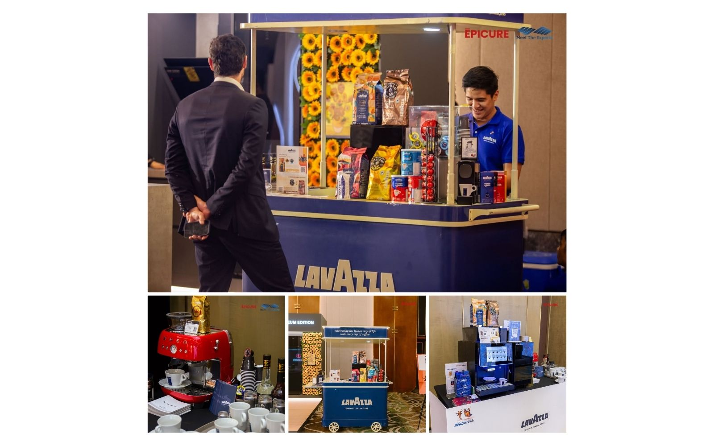
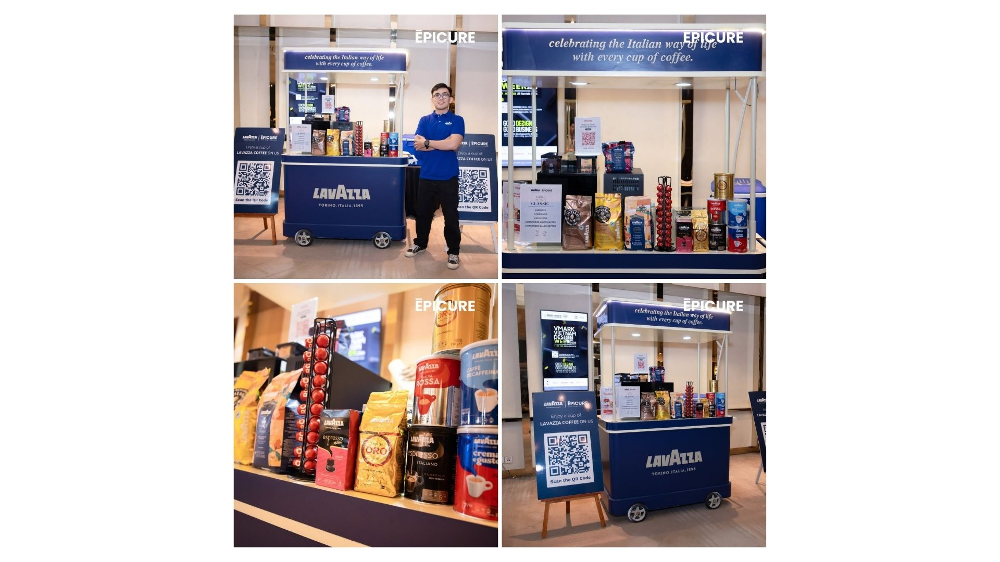
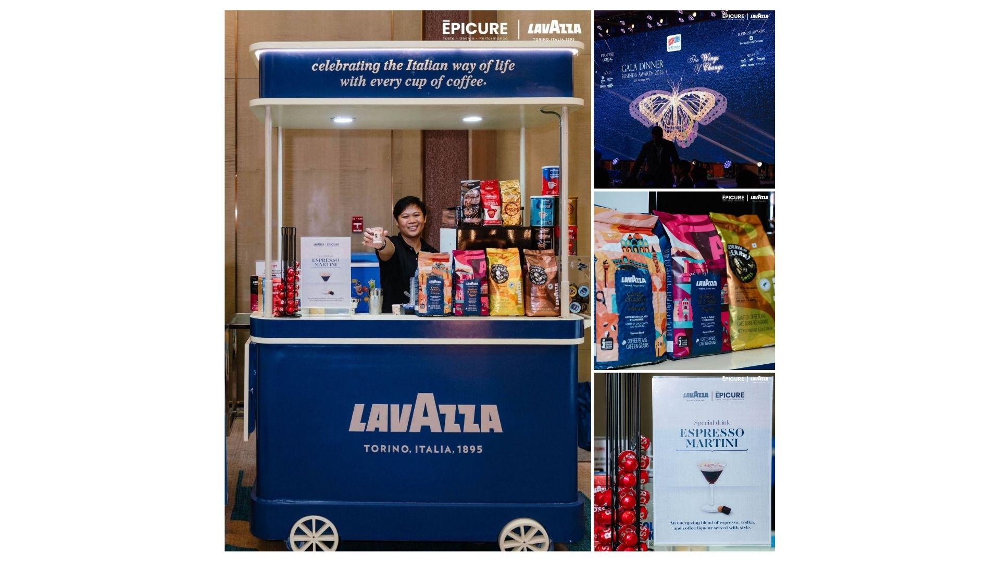
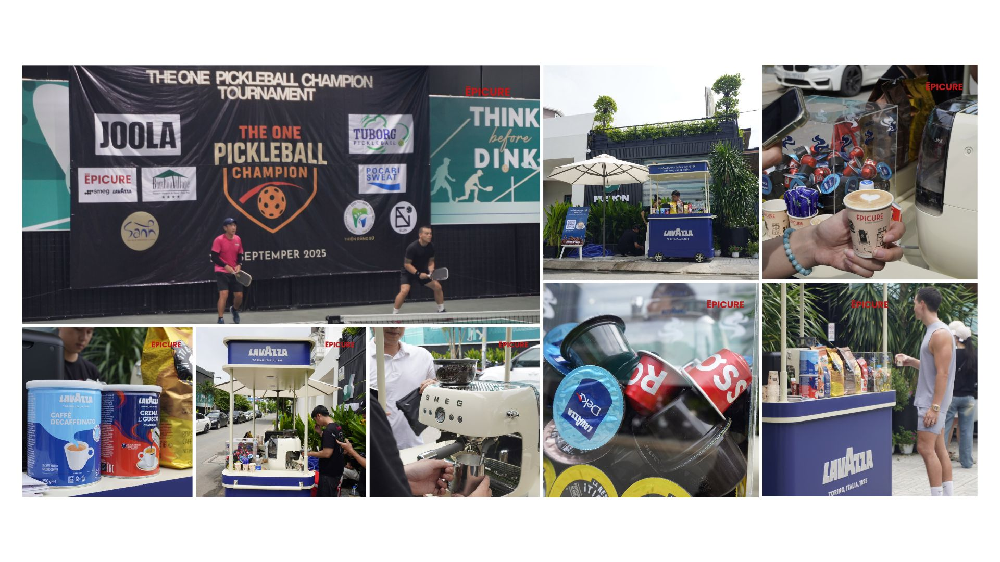